Redesigning Three EU Data Visualizations
Critiques and redesigns of three published European data stories, rebuilt around Cleveland and McGill’s perceptual rankings and Tufte’s data-ink ratio so their main message can be read quickly and accurately.


- Course
- ISE 6604: Human Factors of Visual Display Systems
- Instructor
- Dr. Joseph Gabbard
- Tools
- Tableau Public, Excel
- Date
- Oct 2026
The problem and the approach
Published data stories often favor visual flair over legibility. Radial layouts, overlapping lines, and diverging color ramps look striking, but they make readers decode values through low-accuracy channels like angle, area, and hue. I redesigned three figures from data.europa.eu so their main message reads quickly and accurately.
Each followed the same path: critique the original, prototype in Excel, take class feedback, then build an interactive final version in Tableau Public. Four sets of concepts guided every decision:
- Elementary perceptual tasksCleveland and McGill’s ranking: position on a common scale is read most accurately; angle, area, and color least.
- Clutter and occlusionVisual noise and overlapping marks slow search and hide values.
- Data-ink ratioTufte’s principle that every mark on a graph should carry information.
- Salience, color, and GestaltMaking benchmarks stand out, fitting the palette to the data, and grouping with proximity and enclosure.
| Original | Redesign | Primary encoding | |
|---|---|---|---|
| 1 | Disability employment gap, as a radial chart | Dumbbell chart | Position on a common scale, plus length |
| 2 | Social media use for news by age, as three multi-line charts | Bubble matrix | Area, labeled with exact values |
| 3 | Summer tourism concentration, as a diverging choropleth | Choropleth with a linked dot plot | Position on a common scale, plus sequential color |
1. Disability employment gap
The original compares the employment rate of people with disabilities with the total employment rate across EU member states in 2024, along with both EU averages and each country’s gap.
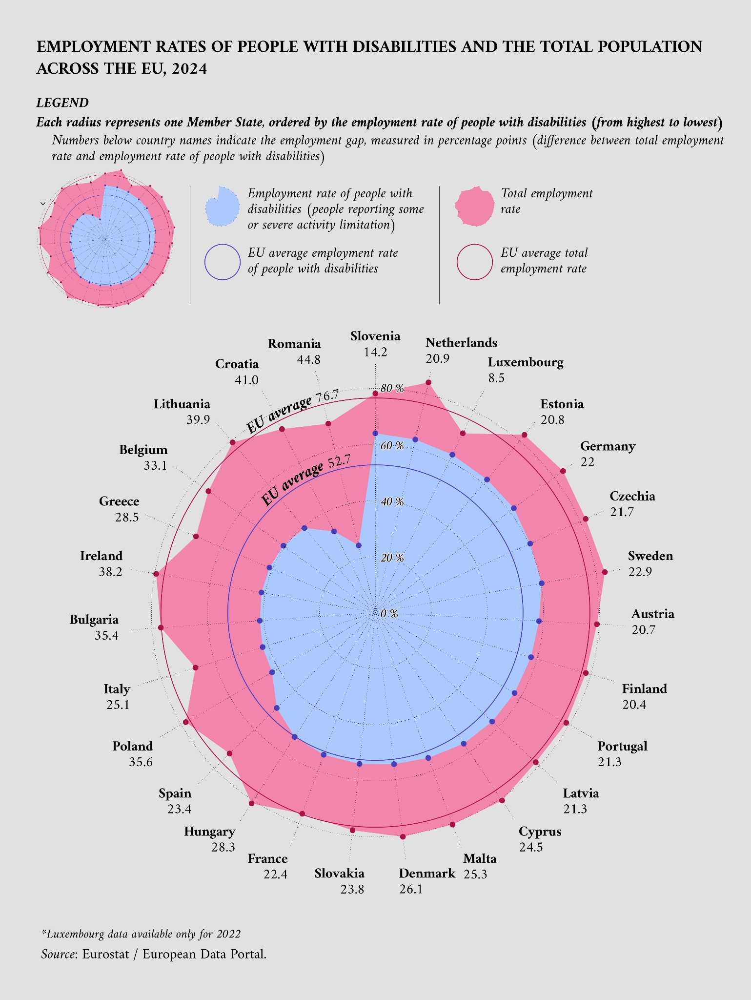
Reprinted from data.europa.eu (2026a). Data from Eurostat (2026a, 2026b).
The critique
Values sit on a non-aligned radial scale, which ranks below an aligned one, so countries on opposite sides of the circle are hard to compare. The gap is the length of an unaligned pink band, and because area grows with radius, the outer ring looks bigger than it is.
The ordering doesn’t fit the message either: the figure is about the gap, but countries are sorted by the disability rate. The EU average lacks salience, the filled areas add ink without information, and the legend sits far from the data.
The chart’s main message, the gap, is the hardest thing to read.
Iteration
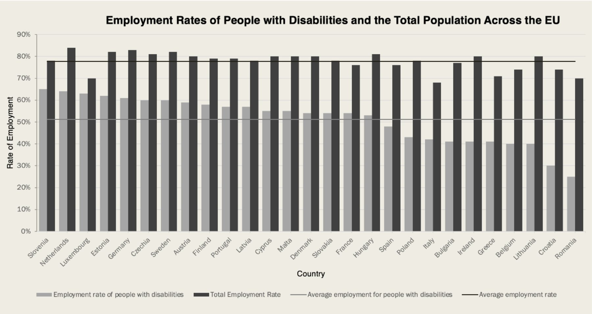
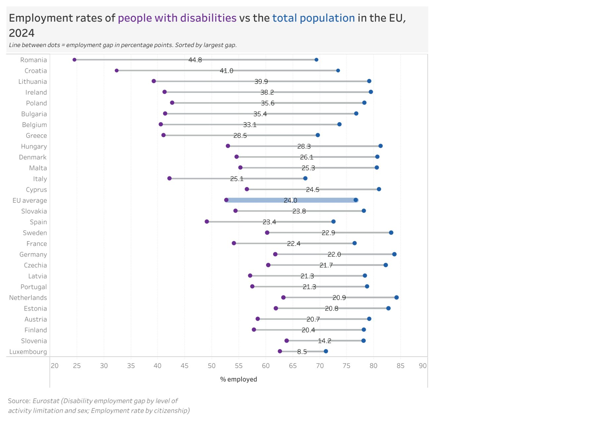
The prototype moved to a flat common scale and sorted the countries, but the gap still had to be inferred from two bars, the grays were hard to tell apart, and 56 bars made pairs hard to match.
| Class feedback | Decision |
|---|---|
| Use color instead of grays | AppliedOrange and blue replaced the grays, and the colored title doubles as the legend. |
| Make the bars thinner | AdaptedThe bars became a dumbbell: one thin line per country links the two rates. |
| Use a 0–100% scale | Not appliedDumbbells encode position, not length, so a 20–90% range is valid and keeps the gaps visible. |
Final redesign
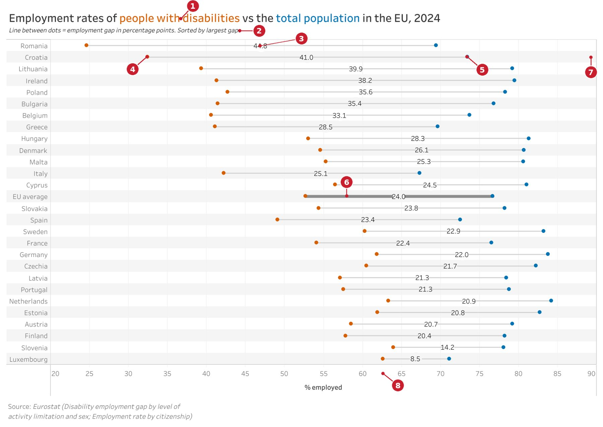
- Title colored to act as the legend
- Sorted by largest gap
- Gap value on a circle over the line
- Orange dots: people with disabilities
- Blue dots: total employment
- EU average line made salient
- Row stripes match each country to its dumbbell
- Shared % employed axis
Both rates now sit on one aligned scale, with countries sorted by gap and each gap printed on its line. The EU average gets its own thicker row in the middle as a single benchmark. Fixed dot sizes, orange against blue, and row stripes make each pair easy to read, and the title replaces the legend.
- GainedCountries can be ranked by gap at a glance, with the EU benchmark in the middle for direct comparison.
- Trade-offThe chart is much taller and loses the original’s compact, vibrant look.
Explore it. Hover over any dumbbell to read that country’s exact rates.
2. Social media use for news by age
The original shows media use, social platform use, and engagement type for political and social news, split by four age groups.
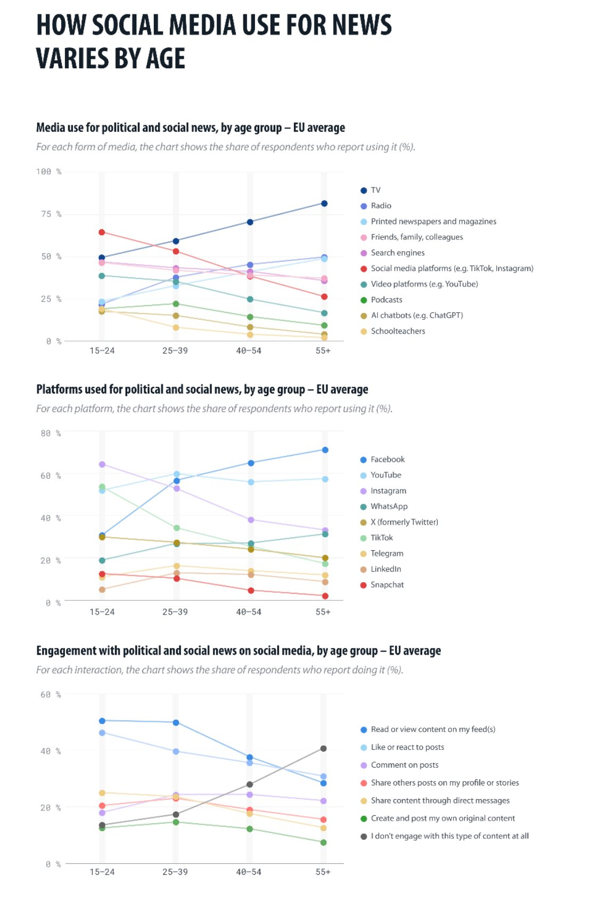
Reprinted from data.europa.eu (2026b). Data from European Parliament (2025).
The critique
The charts rely on position and slope, a lower-ranked task, and many points are occluded. Connecting lines imply continuity even though age groups are ordinal, adding ink with no information.
Each chart uses 7 to 10 hues, more than hue can reliably separate (Healey, 1996). The y-axes differ across charts, and the source’s significance tests never appear.
Comparing age groups, the point of the figure, is buried under lines, overlaps, and too many hues.
Iteration
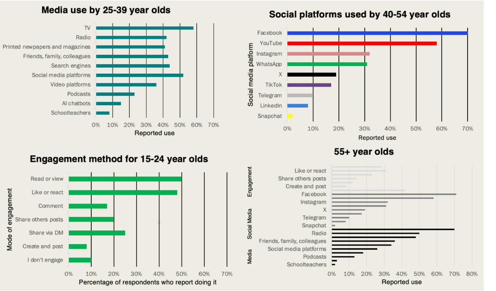
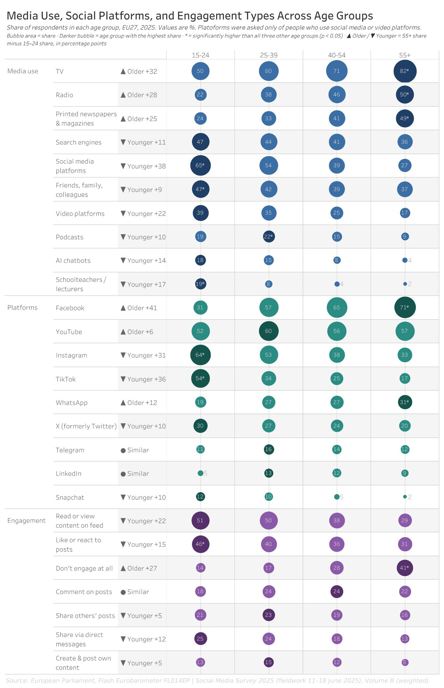
The prototype removed the lines and overlaps, but splitting age groups into separate charts removed the comparison between ages, and per-app brand colors competed with each other.
| Class feedback | Decision |
|---|---|
| Add a legend to the 55+ chart | Applied, in a stronger formEvery item is labeled in its own row, so color only separates the three sections. |
| Use a 0–100% scale | AdaptedNo axis, but every bubble scales from zero on one shared size scale, so equal values look equal. |
| Separate charts lose the age comparison | AppliedAll four age groups now sit side by side in one figure. |
Final redesign
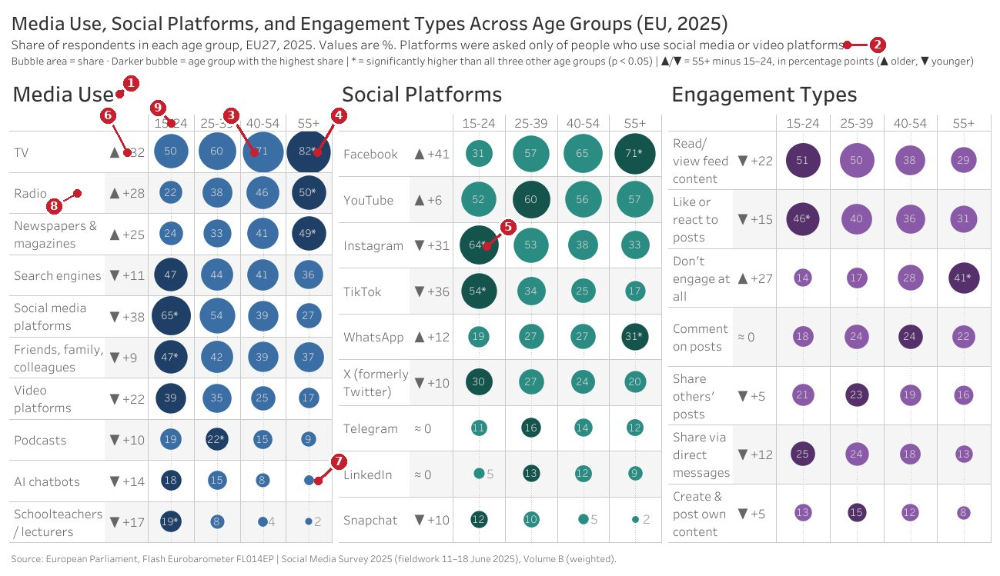
- Three sections side by side
- Platform data only from social media and video platform users
- Bubble area encodes share
- Darker bubble: largest share in a row
- Asterisk: significantly higher than all other ages
- Arrows show the age trend in a row
- Small values placed outside their bubbles
- Alternating row shading
- Age header
A bubble matrix puts every age group in one row, with one hue per section instead of brand colors. Because area ranks below position, every bubble is labeled with its exact value. Darker bubbles mark each row’s maximum, asterisks carry the source’s significance tests, and arrows show the youngest-to-oldest trend. The three side-by-side panels fit on one screen.
- GainedAll 26 items and four age groups appear without clutter or overlap, and it’s clear at a glance which media skew young or old.
- Trade-offIt uses area rather than the more accurate position; exact labels make up for that.
Explore it. Hover over a bubble for the full survey question and exact share.
3. Summer tourism concentration
The original maps the share of each European NUTS 2 region’s annual guest nights that fall in June to August, 2023.
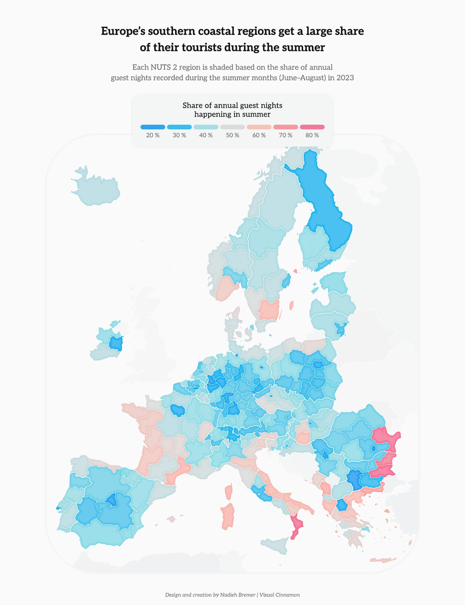
Reprinted from data.europa.eu (2025). Data from Eurostat (2026c).
The critique
The map relies only on hue and saturation, both low-ranked, and neighboring colors distort each other. The diverging palette implies a meaningful midpoint near 50% that summer share doesn’t have. Large regions dominate, so small Mediterranean coastal regions with high shares get lost.
Without a common scale, distant regions can’t be compared, and region names, country borders, and exact values are all missing.
Two weak perceptual channels, no common scale, and missing context.
Iteration
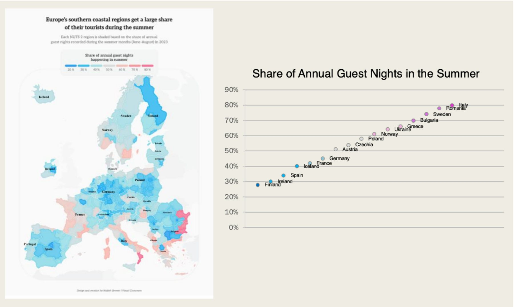
The prototype added an aligned scale beside the map, but it used approximate country-level values, lost all regional detail, crowded the country names, and kept the diverging palette.
| Class feedback | Decision |
|---|---|
| Plot NUTS 2 regions, not just countries | AppliedEvery region is plotted, grouped by country. |
| Turn the dot plot vertical | AppliedCountries run down the side, so names are easier to read. |
| Use a 0–100% scale | Not appliedThe data spans 22–77%, and a dot plot encodes position, so a 20–80% axis keeps differences visible. |
Final redesign
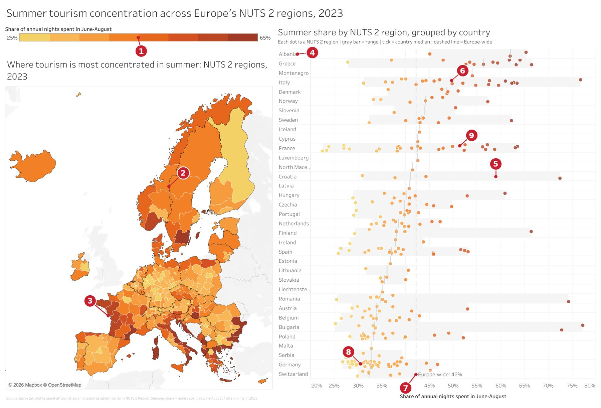
- Gradient legend: 8 steps of 5 points, 25–65%
- Country borders
- Europe-wide color scale
- Countries ordered by median
- Gray range band per country
- Median tick per country
- Europe-wide summer share
- Jitter prevents dot overlap
- Dots colored to match the map
A sequential warm palette on one Europe-wide scale replaces the diverging hues, and subtle borders show country membership. The linked dot plot adds position on a common scale: jittered dots per region, a gray range band and median tick per country, and a dashed Europe-wide benchmark. Both views share one gradient, and names and exact values appear on hover.
- GainedThe map shows where regions are and the dot plot shows exact, ordered values, revealing variation within countries, such as Croatia’s 31% to 72%.
- Trade-offTwo linked views take more space and reading time than one map.
Explore it. Hover over a region on the map or the dot plot to highlight it in both views.
What carried across all three
The originals shared the same problems: low-ranked perceptual tasks, clutter, and high-ranked tasks used poorly. The redesigns shared four solutions:
- Aligned position firstPosition on a common scale was the primary encoding wherever possible.
- Area, but labeledWhere area was the right choice, exact labels made up for its lower accuracy.
- Salient benchmarksEU averages, row maximums, medians, and Europe-wide lines guide the eye.
- Higher data-ink ratioFewer legends, lines, and hues, with detail moved into tooltips.
My prototypes lost some information and added clutter of their own, and iteration fixed both. Class feedback mainly shaped the color choices, the NUTS 2 regions, and the dot plot’s orientation; I declined the 0–100% scale suggestion wherever a chart encodes position rather than length.
Sources Show all 12Hide
- Cleveland, W. S., & McGill, R. (1984). Graphical perception: Theory, experimentation, and application to the development of graphical methods. Journal of the American Statistical Association, 79(387), 531–554. https://doi.org/10.1080/01621459.1984.10478080
- Cleveland, W. S., & McGill, R. (1985). Graphical perception and graphical methods for analyzing scientific data. Science, 229(4716), 828–833. https://doi.org/10.1126/science.229.4716.828
- data.europa.eu. (2025, July 31). Leisure in Europe: Insights from open data. Publications Office of the European Union. https://data.europa.eu/en/publications/datastories/leisure-europe-insights-open-data
- data.europa.eu. (2026a, February 11). Living with disability in Europe: What open data shows. Publications Office of the European Union. https://data.europa.eu/en/publications/datastories/living-disability-europe-what-open-data-shows
- data.europa.eu. (2026b, June 10). Social media use in the EU: From countries to generations. Publications Office of the European Union. https://data.europa.eu/en/publications/datastories/social-media-use-eu-countries-generations
- European Parliament. (2025). Flash Eurobarometer FL014EP: Social media survey 2025 [Data set]. data.europa.eu. https://data.europa.eu/data/datasets/s3592_fl014ep_eng?locale=en
- Eurostat. (2026a). Disability employment gap by level of activity limitation and sex (tepsr_sp200) [Data set]. Retrieved Sept. 17, 2026, from https://data.europa.eu/data/datasets/tbrhqm5vm0zrcz3arcfg?locale=en
- Eurostat. (2026b). Employment rate by citizenship (sdg_08_30a) [Data set]. Retrieved Sept. 17, 2026, from https://data.europa.eu/data/datasets/xr3lnpisncskxmdydwpcw?locale=en
- Eurostat. (2026c). Nights spent at tourist accommodation establishments by month and NUTS 2 region (from 2020 onwards) (tour_occ_nin2m) [Data set]. Retrieved Sept. 17, 2026, from https://ec.europa.eu/eurostat/databrowser/view/TOUR_OCC_NIN2M__custom_3923847/bookmark/table?lang=en&bookmarkId=f64e2e84-bda9-424e-a4aa-e0822d8bbffd&page=time:2021
- Eurostat. (n.d.). Overview – NUTS – Nomenclature of territorial units for statistics. European Union. Retrieved October 4, 2026, from https://ec.europa.eu/eurostat/web/nuts/overview
- Healey, C. G. (1996). Choosing effective colours for data visualization. In Proceedings of the Seventh Annual IEEE Visualization '96 (pp. 263–270). IEEE. https://doi.org/10.1109/VISUAL.1996.568118
- Tufte, E. R. (2001). The visual display of quantitative information (2nd ed.). Graphics Press.